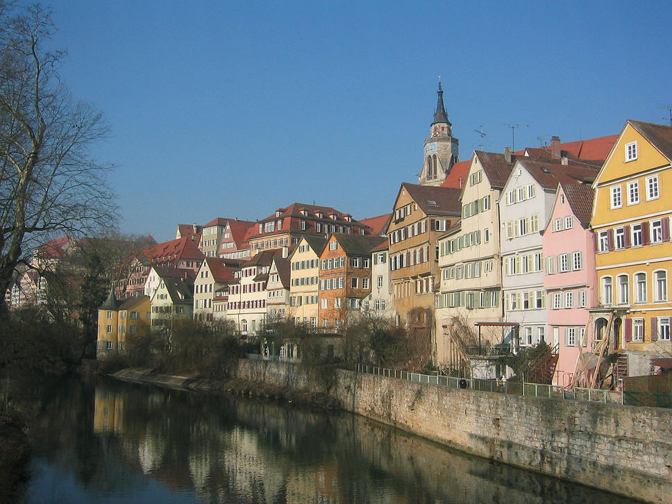
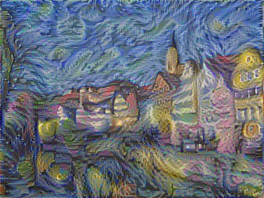

Kabir Ahuja
Deep Learning EnthusiastTeaching a neural network to paint: Neural Style Transfer
Deep Learning has emereged as an immensly popular field nowadays.It is being used almost everywhere, to recognize objects, caption images, building autonomous cars, machine translation etc etc.. Today we will be looking at a very interesting application of deep learning, particularly Convolutional Neural Nets to generate some very cool paintings from normal images. Basically what we will be doing is that we will take a normal picture and an image of a painting , and we will generate an image which looks like our content image but is styized like our style image. Lets look at some images that i generated using style transfer, that will give a better intuition.
Content Image
Style Image

Generated Image
It looks quite cool isn't it. After following this tutorial you will also be able to generate similar but much cooler images :)
Convolutional Neural Networks
Before we begin generating some really cool images, first we must understand what a convolutional neural network is. Convolutional neural networks are very much similar in spirit to the ordinary neural networks, they take an image as input, perform some operations on the input to give a layer of activations, then we operate on that layer to get another layer of activations, repeat this process a number of times and output final results(in a image classification task the final result will be the category to which the image belongs) What changes in convnets is the way we operate on each layer. Lets say I have a 128x128x3 image(widthxheightxchannels). In vanilla neural nets what we do is reshape this image to a 128*128*3 dimensional vector, take its dot product with the learned parameters to give the activations. But in a convnet we consider the image as a 3D volume (depth of the volume being the number of channels i.e RGB), take some filters and convolve them with the image to produce the activation. Whoaah whats that suppose to mean??

Image taken from uploads.wikimedia.org
Suppose we have a 6x6x1 input as shown in the image and we want to convolve it with a 3x3x1 filter, so what we will do is take the dot product of the filter with 3x3x1 portion of the image and get a resulting scalar value, then we will slide the filter over to the next 3x3x1 portion and calculate the dot product again to obtain the next value and repeat this process to get the final output. One thing that we must remember is that the depth of the filter and the input must be same(if we have a nxnxd input then filter should me mxmxd) otherwise taking the dot product wont make any sense. Now that we have some idea about how convolution works, lets visit the convnets again. So we will take the image as input which is a 3D volume, take some filters and convolve the image with the filters. Each filter will produce a 2D output and collectively with outputs from all the filters it becomes a 3D volume with depth equal to the number of filters(remember each filter produces a seperate 2D output). The layer thus obtained is called a convolutional layer. We can build more such layers to get our convnet architecture. You must be wondering where do we get these filters, the answer is simple we learn them. Like any other machine learning task we take the data, in our case the images with labels of the class or category the image belongs to(is this is an image of a dog or cat etc etc), randomly initialize these filters, define a loss function which represents the error in the values of labels predicted by our model, minimize it using our favourite gradient descent and hence learn the values of these filters. These filters can be thought of as neurons which look at small portions of input and fire up (in our case it means produce a high numerical value on convolving) when it sees a particular feature it is looking for in the input, like we can have a neuron which fires when it sees the faces in the image, or a neuron which fires when it sees the tyres in the image etc etc. After we have learned these filters or neurons we can classify the images with a very good accuracy. There's a lot more to convnets(quite a lot actually), i just wanted to give you a rough intution of them so that you can understand the next topics easily. If you want to read more on convnets, here's a great read http://cs231n.github.io/convolutional-networks/
Neural Style Transfer
Now lets begin understanding how neural style transfer works. We take a content image, a style image and using a convolutional neural network we generate the painting of our content image. But so far from what we have studied about convnets they are supposed to classify the images, so how can we generate images from them? See the thing is, in neural style we do not train our convnet on a bunch of images to learn the filters, but instead what we do is take a pretrained convnet model i.e a convnet already trained for some image classification task (We will be using VGG net for this tutorial) and then instead of learning for the filters we learn the image i.e we randomly initialize an image, define a loss function (which we will get into in a bit) and minimize that loss function to get the learned image. Now lets see what the loss function looks like in this case. Remember we have 2 images, a content image and a style image. So we define two losses, content loss and the style loss and the total loss is taken as the weighted sum of both these losses. Lets first see what how we define the content loss
Content Loss
As we have discussed above, we want our generated image to look like the content image i.e both the images should have the similar context. Since both must have the same context, both of them should respond very much similar to the filters or neurons of the convnet. In simple words, lets say i want to generate a picaso painting
of deadpool, my content image will be an image of deadpool and generated image should be a picture of deadpool which looks like it is painted by picaso, but both images have the same context, both of them contain our favourite deadpool its just the style of the image that is different, so the neurons much fire pretty much similiarly while looking at both images.
So what we do is take our content image, pass it to our pre trained convnet and calculate the activation at some deeper layer (reason for choosing the deeper layer is that the filters in the initial layers look for small things like sharp edges or color, but as we go deeper the filters start to look for special features like faces,tyres,text etc). Similarly we randomly initialize
the image which we want to generate pass it to the convnet and obtain the activations at the same layer.
The content loss is defined as the sum of squares of differences in activations of the content image and the generated image.
Where matrix F is the activation map of the content image at layer l and P the activation map of generated image at layer l.
Lets see how to implement the function which gives the content loss in python and tensorflow.
#Defining the content loss function
def _create_content_loss(p, f):
#inputs
#f: feature map of the content image
#p: feature map of the input_image
#outputs the content loss
content_loss = tf.reduce_sum(tf.square(f-p))/(4*p.size)
#we divide by 4*p.size, because it has been observed that it converges faster that way
return content_loss
Style Loss
Lets talk about style loss now. We will take a 3D volume of activations at some layer l of the style image and the generated image, reshape them in such a way that all the spatial dimensions are combined as a single dimension. Sounds complicated right? Lets take an example, lets say we have a 10x10x5 volume of activations 10 being the width and height and 5 the depth, which corresponds to number of filters the input was convolved with, so what we will do is reshape this activation map into a 100x5 matrix. After we have the reshaped activation maps for both style and generated image, we will calculate the gram matrices. A Gram matrix represents the correlations between responses of each filter, like in our example we had 100x5 feature map i.e we have five columns with 100 elements and each column corresponds to the response of the input to a particular filter. A gram matrix captures how the activations of different features are correlated with each other. Mathematically if our feature map is F, then the gram matrix is calculated as, G = F'*F (' being the transpose). Lets see the gram matrix calculation in code.
def _gram_matrix(F, N, M):
#inputs
#F: feature maps
#M: width*height of a feature map
#N: depth of the feature map
#outputs the gram matrix which gives the correlation between the pair of activations and is defined as F'*F
F = tf.reshape(F,(N,M))
G = tf.matmul(F,tf.transpose(F))
return G
Hence the Gram matrix gives the activation statistics of an image. We want activation statistic of our generated image to match the activation statistics of the style image. So we define another loss function which takes care of that. The Style loss at a layer l is defined as: Where G is the gram matrix of the feature map of the generated image and A is the gram matrix of the feature map of the style image. Unlike in content loss, where we calculated the loss at only one deeper layer, for calculating the total style loss we calculate the style loss at different layers and take the total style loss as weighted sum of individual style losses of different layers. Note that we increase the values of weights as we go to deeper layers. Lets see how style loss is implemented in code.
#Defining the style loss function for a particular layer
def _single_style_loss(a, g):
#inputs
#a: feature map of the style image
#g: feature map of the input_image
#outputs the style loss for a particular activation layer,
#defined as sum of squares of the differences between the gram matrices of both a and g
M = a.shape[1]*a.shape[2]
N = a.shape[3]
#getting the gram matrices
G_a = _gram_matrix(a,N,M)
G_g = _gram_matrix(g,N,M)
style_loss = (0.5/(M*N)**2)*tf.reduce_sum(tf.square(G_a-G_g))
return style_loss
#Defining the function which calculates the total style loss
def _create_style_loss(A, model):
#inputs
#A: A is a dictionary containing the activation maps of the
#style image for different conv layers
#model: Our computaional graph containing activation of
#the input image in different layers, along with other
#parameters required for optimization
n_layers = len(STYLE_LAYERS)
style_losses = []
for i in range(n_layers):
style_losses.append(_single_style_loss(A[STYLE_LAYERS[i]],
model[STYLE_LAYERS[i]]))
loss = 0
for i in range(n_layers):
loss += W[i]*style_losses[i]
#remember W is a list of weights of
#contribution of different layers to the style loss
return loss
Total Loss
As discussed above, the total loss is defined as the weighted sum of the style and content loss.
Typically alpha/beta is taken as 1/20 or 1/50. Using these weights we can regulate the emphasis of content or style image on the generated image. Very low values of alpha/beta like 1/10000 will result a greater emphasis of style image while values like 1/10 will result in more emphasis of the content image. Feel free to tweak these weights to obtain some interesting results. Lets see this in code.
#Defining the function create_losses which finds the net loss, content loss + style loss
def _create_losses(model,content_activations,style_activations):
#inputs
#model: Our computaional graph containing activation of the
#input image in different layers, along with other
#parameters required for optimization
#content_image:a dictionary which contains the activations
#of the style_image at
#different layers of the convnet
#style_activations: a dictionary which contains the activations
#of the style_image at
#different layers of the convnet
with tf.variable_scope('loss') as scope:
#finding content loss
content_loss = _create_content_loss(content_activations[CONTENT_LAYER],
model[CONTENT_LAYER])
#finding style loss
style_loss = _create_style_loss(style_activations, model)
total_loss = 0.001*content_loss + 1*style_loss #total loss as the weigthed sum
#ofcontent and style loss
#feel free to tweak the weights,
#1/50 and 1/20 are also quite
#common
return content_loss, style_loss, total_loss
Training our model
Now that we have our loss function, what we need to do is perfrom an optimization technique to minimize the total loss and hence obtain the the generated image. Lets take a look at our train function
#training our model
def train(model, generated_image, initial_image):
#inputs
#model: Our computaional graph containing activation of
#the input image in different layers, along with other
#parameters required for optimization
#generated_image: input image
#initial_image: the initial image, which is just the content
#image with some noise
skip_step = 1
with tf.Session() as sess:
saver = tf.train.Saver()
#initializing the variables
sess.run(tf.global_variables_initializer())
#here we are assigning the initial_image to the
#variable generated_image which is nothing but our input image
sess.run(generated_image.assign(initial_image))
#checking whether a checkpoint exists.
#A checkpoint is basically used to save our model while training,
#so that we dont need to start the training from scratch every time.
#in our case since we are running this for the
#first time there wont be any checkpoint initially
ckpt = tf.train.get_checkpoint_state(os.path.dirname('checkpoints/checkpoint'))
if ckpt and ckpt.model_checkpoint_path:
saver.restore(sess, ckpt.model_checkpoint_path)
#global_step basically contains the number of
#training steps which have happened till now i.e number of
#optimization steps
initial_step = model['global_step'].eval()
start_time = time.time()
#Training start
for index in range(initial_step, ITERS):
if index >= 5 and index < 20:
skip_step = 10
elif index >= 20:
skip_step = 20
#skip_step is used to print the losses,
#save the checkpoint and generated images at specific steps of iteration
#and not at all the iterations. you can choose it as whatever you like.
#running the optimizer
sess.run(model['optimizer'])
if (index + 1) % skip_step == 0:
#getting the generated image and total loss at the skip_step
gen_image = sess.run(generated_image)
total_loss = sess.run(model['total_loss'])
gen_image = gen_image + MEAN_PIXELS
#printing the total loss
print('Step {}\n Sum: {:5.1f}'.format(index + 1, np.sum(gen_image)))
print(' Loss: {:5.1f}'.format(total_loss))
print(' Time: {}'.format(time.time() - start_time))
plt.imshow(gen_image[0])
plt.show()
start_time = time.time()
#saving the image
filename = 'outputs/%d.png' % (index)
utils.save_image(filename, gen_image)
#saving the checkpoint
if (index + 1) % 20 == 0:
saver.save(sess, 'checkpoints/style_transfer', index)
So basically what we are doing here is running the optimization using sess.run(model['optimizer']) during each iteration, running the optimizer calculates the gradients of the loss function and using them updates the generated image. Now finally lets look at our main function which creates the computational graph, the activation dictionaries and calls the create_losses and train function.
def main():
with tf.variable_scope('input') as scope:
# use variable instead of placeholder because we're training the intial image to make it
# look like both the content image and the style image
input_image = tf.Variable(np.zeros([1, IMAGE_HEIGHT, IMAGE_WIDTH, 3]), dtype=tf.float32)
#Downloading the pre trained VGG_MODEL weights
utils.download(VGG_DOWNLOAD_LINK, VGG_MODEL, EXPECTED_BYTES)
#model is our computational graph, containing activations
#of the input image in different layers and other things
#like optimizer,loss essential for training
model = vgg_model.load_vgg(VGG_MODEL, input_image)
#resizing and normalizing the content image
content_image = utils.get_resized_image(CONTENT_IMAGE, IMAGE_HEIGHT, IMAGE_WIDTH)
content_image = content_image - MEAN_PIXELS
style_image = utils.get_resized_image(STYLE_IMAGE, IMAGE_HEIGHT, IMAGE_WIDTH)
style_image = style_image - MEAN_PIXELS
#getting the dictionary content_activations which
#contains the activation of the content_image at
#different layers of the convnet
with tf.Session() as sess:
sess.run(input_image.assign(content_image))
content_activations = sess.run(model)
#getting the dictionary style_activations which
#contains the activation of the style_image at
#different layers of the convnet
with tf.Session() as sess:
sess.run(input_image.assign(style_image))
style_activations = sess.run(model)
#getting the content_loss, style_loss and total_loss
c,s,t = _create_losses(model,content_activations,style_activations)
model['content_loss'] = c
model['style_loss'] = s
model['total_loss'] = t
model['global_step'] = tf.Variable(0, dtype=tf.int32,
trainable=False, name='global_step')
#creating an optimizer, I am using Adam Optimizer,
# you can also use RMS Prop or Adagrad
model['optimizer'] = tf.train.AdamOptimizer(LR).minimize(model['total_loss'],
model['global_step'])
#initializing the initial image as the content_image
# with some noise generated over it
initial_image = utils.generate_noise_image(content_image, IMAGE_HEIGHT,
# IMAGE_WIDTH, NOISE_RATIO)
#Let the training begin
train(model, input_image, initial_image)
Please note that vgg_model and utils are the modules which I have imported in my program to use some functions. You can check there implementations here and use them while implementing style transfer on your own. So thats it, now you know how generate some cool paintings of your images. To view the code you can click here and see the ipython notebook where i have implemented the neural style, by just making a few changes in the path of content image and style image you can generate style transfer on your images. I hope you enjoyed this tutorial and if you have any problem regarding implementation of style transfer, feel free to email me or ping me on facebook, I'll be more than happy to help. So thats it for today, coming up next: the famous deep dream